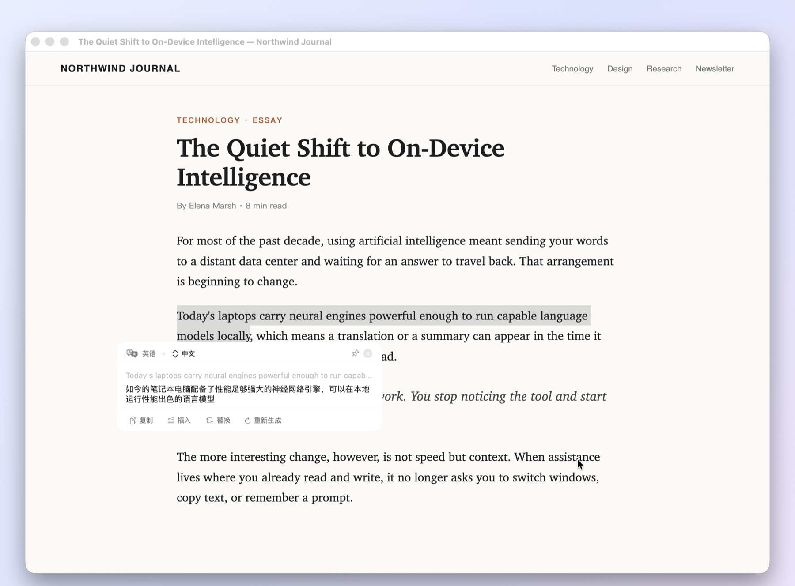
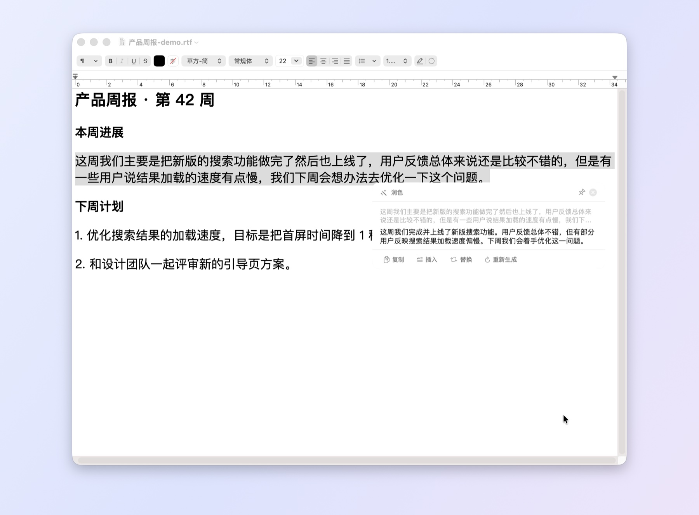
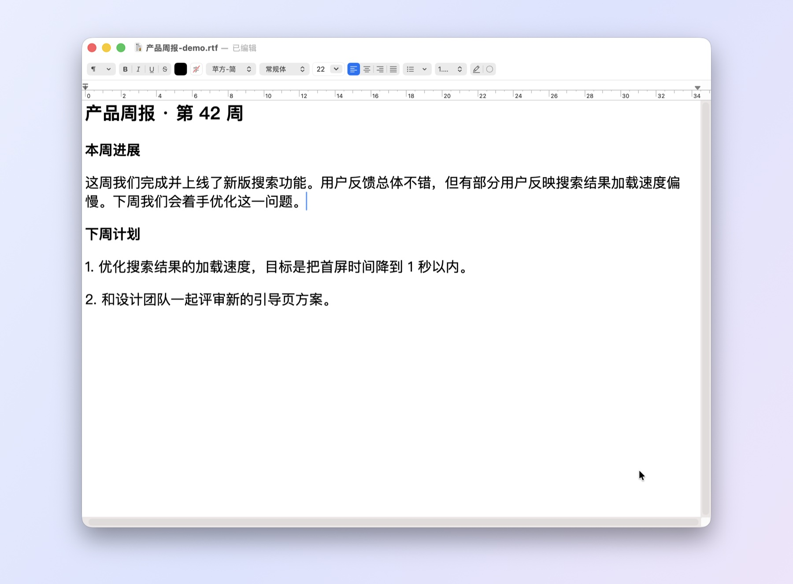
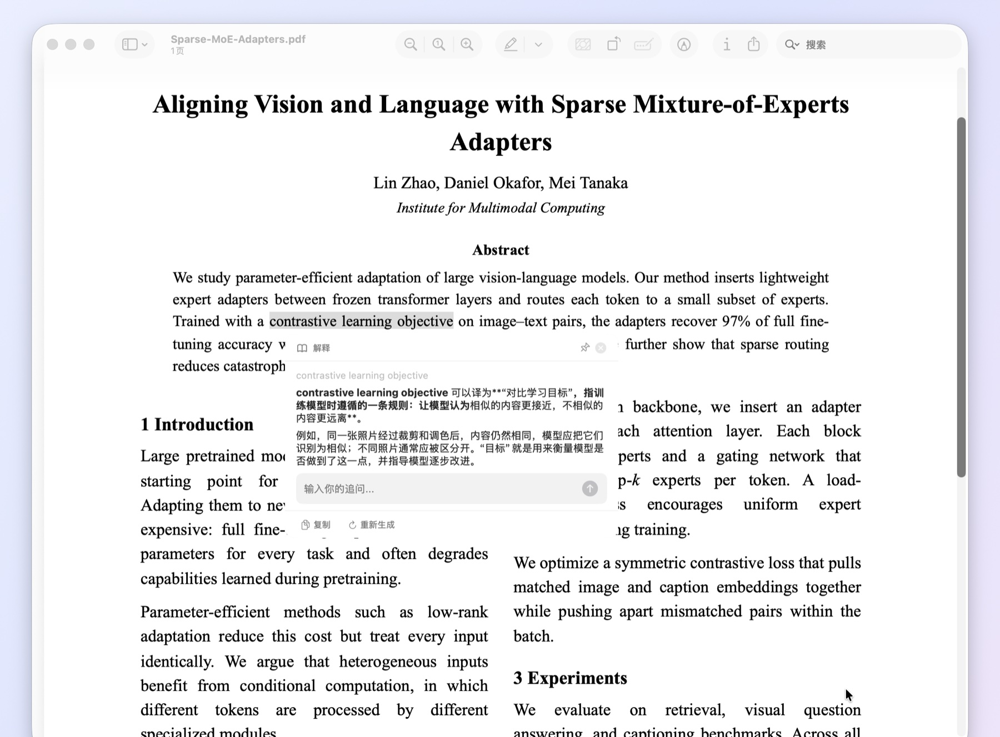
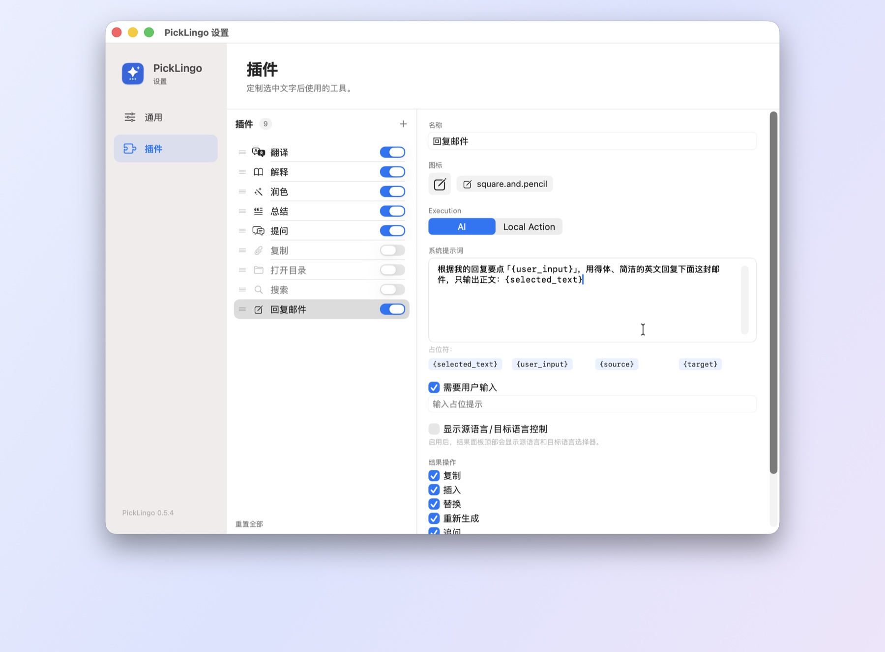
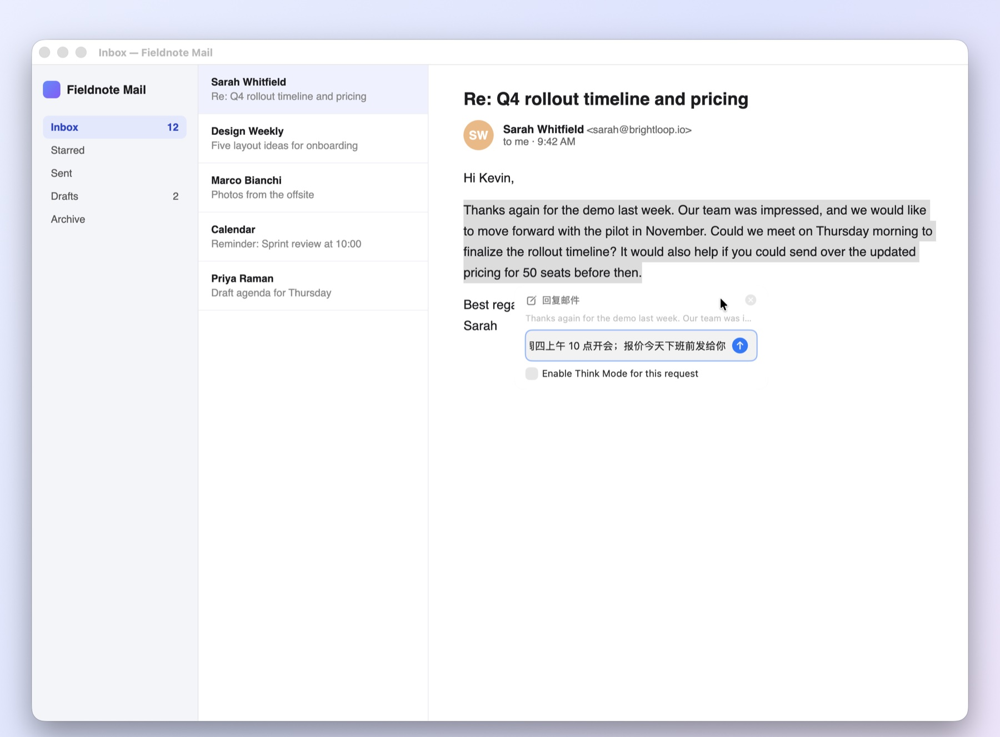
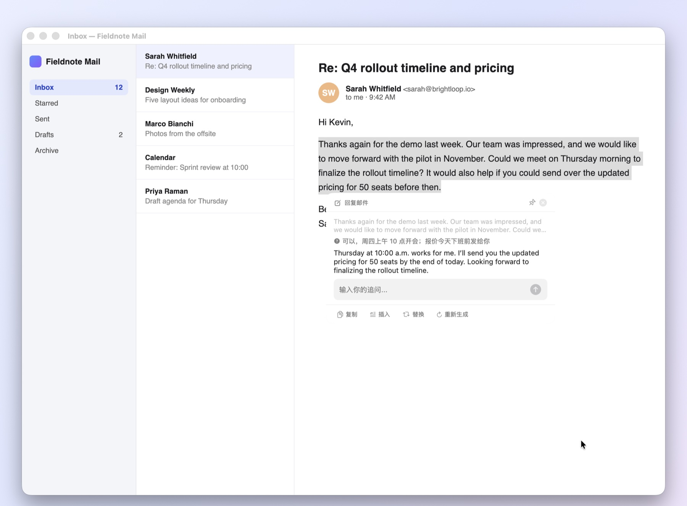
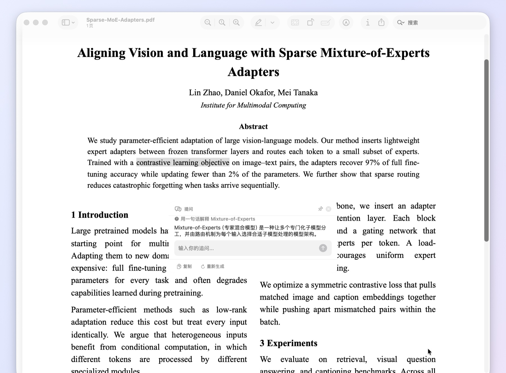
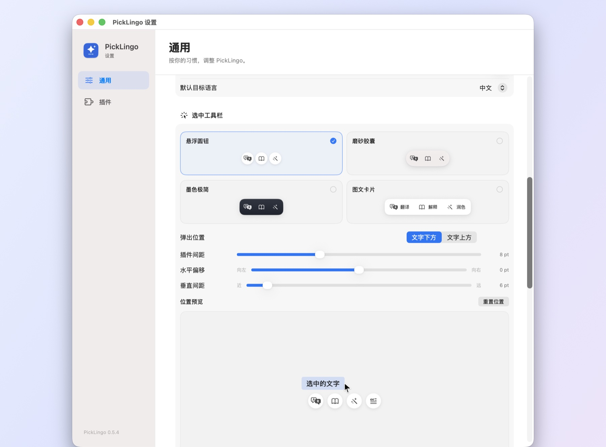

01
选中即翻译
在 Chrome、Safari、Word、Zotero 等应用里划选一句话，工具栏就在松开鼠标的位置弹出。点一下“翻译”，结果流式出现，原文和译文一目了然。
- 自动识别源语言，支持切换目标语言
- 工具栏跟随鼠标，不遮挡正在阅读的内容

PickLingo 是为 macOS 打造的划词 AI 助手。在任意应用中选中文字，工具栏就出现在鼠标旁边：翻译、解释、润色、总结，或运行你自己的插件。
核心功能
以下画面均为 PickLingo 在真实应用中的实际运行截图。
在 Chrome、Safari、Word、Zotero 等应用里划选一句话，工具栏就在松开鼠标的位置弹出。点一下“翻译”，结果流式出现，原文和译文一目了然。

写周报、写邮件时选中一段话，点“润色”得到更通顺的版本；满意就点“替换”，结果直接写回文档，不用来回复制粘贴。


在“预览”或 Zotero 中读论文，遇到陌生术语直接选中并点击“解释”。结果下方还有追问输入框，可以继续深入提问。

自定义插件
把你每天重复的操作做成插件，它会立刻出现在选中工具栏里。下面用 30 秒做一个“回复邮件”插件。



根据我的回复要点「{user_input}」，用得体、简洁的英文回复下面这封邮件，只输出正文：{selected_text}AI 插件调用模型；本地命令插件运行 Shell 命令，例如用选中的路径打开文件夹、拿选中的词去搜索。
{selected_text} 选中内容、{user_input} 补充输入、{source}/{target} 语言，自动转义，命令更安全。
可要求先输入补充信息，可显示语言切换，也可自选结果面板上的复制、插入、替换、追问等按钮。
拖动调整顺序，随时启用或停用；内置插件的提示词同样可以修改。
更多灵感：
提取待办代码解释学术检索术语卡片改写成商务英语生成 Git 提交信息在终端中打开路径不需要选中文字，在任何地方双击 Command，输入问题即可得到回答，并能继续追问。

悬浮圆钮、磨砂胶囊、墨色极简、图文卡片。工具栏以松开鼠标的位置为基准，间距与偏移实时预览。

兼容你常用的应用
通过 macOS 辅助功能读取选区，支持原生控件、Chromium/Electron、WebKit 与 Gecko 内核。个别不开放选区的应用，可先复制文本，再从菜单栏选择“处理已复制文本”。
隐私与可控
取词只读取辅助功能接口，不模拟 ⌘C，不改写剪贴板，不干扰终端的选中即复制。
使用标准 OpenAI Chat Completions 协议，可接入任意兼容服务或本地模型。配置只保存在本机，请求直接发往你填写的地址，不经过任何中转服务器。
自动跳过密码框等安全输入区域；可将任意应用加入黑名单，重启后依然生效。
基于 GPL-3.0 开源，所有代码都可以审阅、构建和修改。
三步上手
打开 DMG，将 PickLingo 拖入“应用程序”。
首次启动若被拦截，前往“系统设置 › 隐私与安全性”选择“仍要打开”；再按提示授予辅助功能权限。
在设置中填写 API Key、Base URL 与模型名，点击“测试连接”，然后去任意应用里选中文字吧。
应用本身免费开源。AI 调用费用由你选择的模型服务决定，也可以接入本地模型。
先确认已授予辅助功能权限，且该应用不在黑名单中。少数应用（如部分终端、画布类应用）不开放选区，可复制文本后从菜单栏选择“处理已复制文本”。
任何兼容 OpenAI Chat Completions 的服务，包括 HTTP/HTTPS 网关与带路径前缀的地址；可保存多个预设并随时切换，支持流式输出与 Think Mode。
插入与替换通过粘贴完成，结果会保留在剪贴板中，方便你再次使用；普通取词全程不会读取或改写剪贴板。